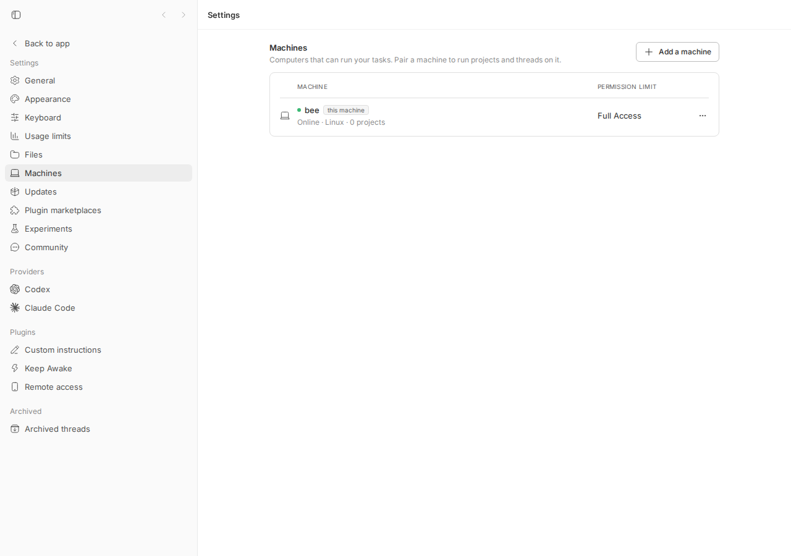
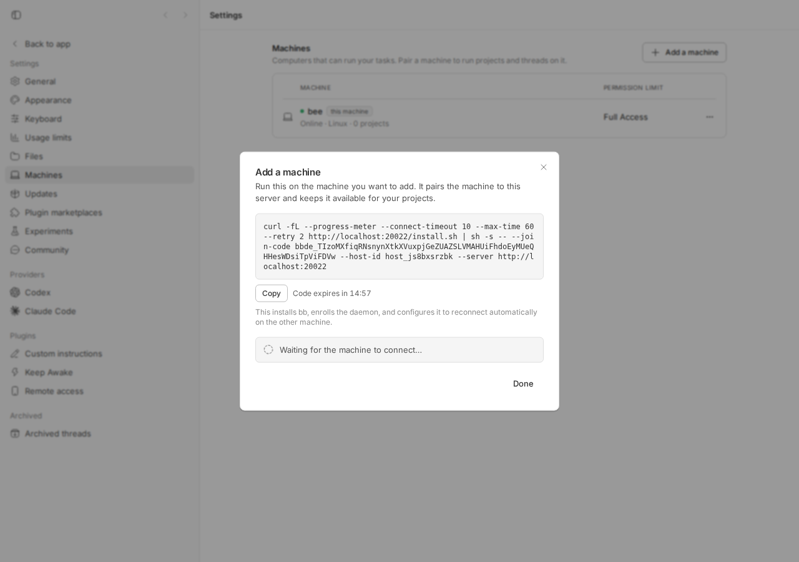
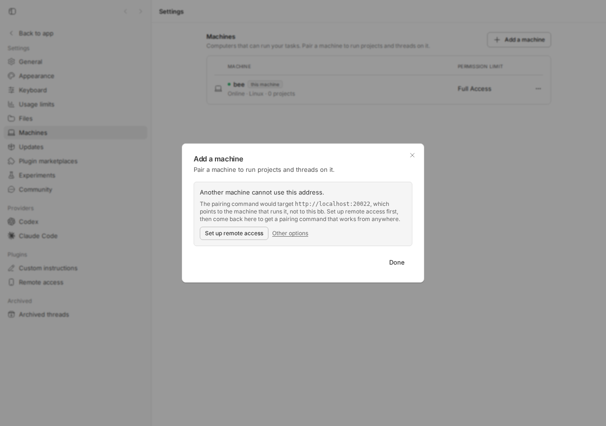
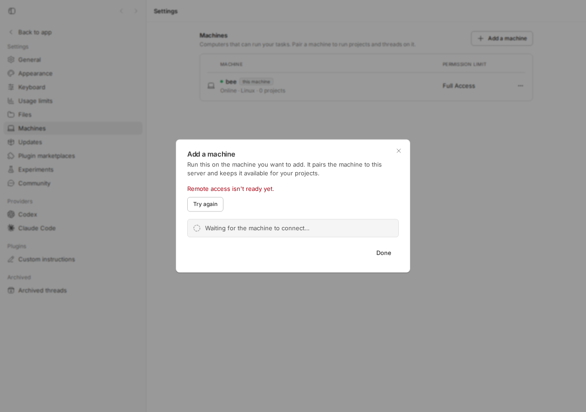

#1690 · Fail adding remote machine for new install
TL;DR
Plain-language framing. bb has one "server" (the thing the UI talks to) and can have several "machines" (computers that run a host daemon and execute work). Settings → Machines → Add a machine prints a one-line curl … | sh installer that you paste on the other computer. That command must contain an address the other computer can reach. Since 0.36.0 the bb server listens on 127.0.0.1 only (a security fix, #1125), so the intended way to reach it from elsewhere is bb connect ("Remote access" in Settings), which gives the server a public getbb.app URL. The dialog asks the connect plugin for a "machine code"; when connect is paired, the command uses the connect URL.
The reporter installed 0.38.0 fresh (connect not paired), clicked Add machine, and got curl … http://127.0.0.1:38886/install.sh | sh -s -- … --server http://127.0.0.1:38886. Run on the Linux box, that command dials the Linux box's own loopback, so it fails; swapping in the MacBook's LAN IP also fails because the Mac's server is loopback-bound. Both observations are correct and I reproduced the first one on my dev instance and in a unit test.
The actual defect is in AddMachineDialog.tsx: when the connect RPC answers not_paired (or 404/503, i.e. plugin missing/disabled/not running) it silently falls back to the direct serverUrl from /api/v1/system/config, which for a desktop install is always http://127.0.0.1:38886. Nothing tells the user that this URL cannot work or that they must pair Remote access (or expose the server) first, even though docs/multiple-devices.md already says exactly that. PR #1695 replaces the unusable command with an explanatory notice linking to Settings → Remote access; it addresses the user-facing root cause with a small remaining gap (a disabled connect plugin gets a "Try again" dead end).
Claims vs findings
| Claim | Status | Evidence |
|---|---|---|
Fresh 0.38.0 desktop install, Settings → Add Machine generates curl … http://127.0.0.1:38886/install.sh … --server http://127.0.0.1:38886 | Verified | Reproduced on main (dev instance: same command with http://localhost:20022, screenshot; unit test AddMachineDialog.issue-1690.test.tsx fails on main with the loopback command rendered). Desktop default server URL is http://127.0.0.1:38886 (apps/desktop/src/types.ts). |
| The URL provided is localhost, so it cannot be run on a remote Linux box | Verified | pairingCommand() falls back to directServerUrl (= system-config serverUrl) when no connect machine code exists. curl http://127.0.0.1:38886 on the Linux box dials itself. |
| The port is only opened on localhost on the MacBook, so substituting the Mac's IP does not work either | Verified (by design) | BB_SERVER_BIND_HOST defaults to 127.0.0.1 since #1125 (0.36.0, CHANGELOG "The server now default binds to loopback"); the desktop app does not set it. start-server.ts:39 passes it to serve({hostname}). This part is intentional; the fix is the connect tunnel (or Tailscale Serve / --server-bind-host 0.0.0.0), not a LAN bind by default. |
| (implicit) Something is broken for a new install | Verified as a UX defect | The documented precondition ("when bb connect is paired…; without bb connect, open the server through a Tailscale Serve URL before generating the installer") is not surfaced in the dialog; it silently emits an unusable command. |
{kind=link}
Environment
- bb
16ceb3a54(main, 2026-08-18), package version 0.38.0 (same as reporter). PR #1695 head8d60b0c4c. - Linux 7.0.0-29-generic x86_64, node v24.18.0, codex-cli 0.147.0.
- Dev instance from worktree
/home/sawyer/projects/bb/.claude/worktrees/wf_debcf606-e4a-6: apphttp://localhost:12022, serverhttp://localhost:20022, host daemonhttp://127.0.0.1:28022, data dir/home/sawyer/.bb-dev/projects-bb-.claude-worktrees-wf_debcf606-e4a-6-26b62bfe8ad8. Connect plugin enabled but not paired (fresh data dir), exactly like the reporter's fresh install. - Screenshots taken with the
dev-browserskill at 1280×900.
Minimal reproduction
A. Unit test (fails on main, passes on PR #1695)
- Save AddMachineDialog.issue-1690.test.tsx to
apps/app/src/components/dialogs/. cd apps/app && pnpm exec vitest run src/components/dialogs/AddMachineDialog.issue-1690.test.tsx
Expected: no curl command whose --server is a loopback address is rendered. Actual on main (log):
FAIL src/components/dialogs/AddMachineDialog.issue-1690.test.tsx > issue #1690 > does not hand the user a pairing command that targets 127.0.0.1
AssertionError: expected <pre …(1)></pre> to be null
- Expected:
null
+ Received:
<pre class="overflow-x-auto whitespace-pre-wrap break-all rounded-md border border-border bg-muted/40 p-3 font-mono text-xs text-foreground">
curl -fL --progress-meter --connect-timeout 10 --max-time 60 --retry 2 http://127.0.0.1:38886/install.sh | sh -s -- --join-code bbde_test --host-id host_new --server http://127.0.0.1:38886
</pre>
Test Files 1 failed (1)
Tests 1 failed (1)
The test mocks exactly what the server returns for an unpaired connect plugin: POST /api/v1/plugins/connect/rpc/createMachineCode → 500 {"ok":false,"error":{"code":"handler_error","message":"not_paired"}} (plugins/connect/src/tunnel.ts throws MachineCodeError("not_paired"); routes/plugins.ts maps handler failures to 500 with code: "handler_error"), and a system-config serverUrl of http://127.0.0.1:38886 (desktop default).
// @vitest-environment jsdom
// Repro for get-bb/bb#1690: on a loopback-bound server (the desktop default
// since #1125), the Add machine dialog falls back to the direct server URL when
// bb connect is unpaired and prints a curl command that another machine can
// never use (it dials the new machine's own 127.0.0.1).
//
// Place at apps/app/src/components/dialogs/AddMachineDialog.issue-1690.test.tsx
// Run: cd apps/app && pnpm exec vitest run src/components/dialogs/AddMachineDialog.issue-1690.test.tsx
// Expected on main (16ceb3a54): FAILS — the loopback curl command is rendered.
import { cleanup, render, screen } from "@testing-library/react";
import type { Host } from "@bb/domain";
import { MemoryRouter } from "react-router-dom";
import { afterEach, describe, expect, it, vi } from "vitest";
import { BbHttpError, sdk } from "@/lib/sdk";
import { createQueryClientTestHarness } from "@/test/queryClientTestHarness";
import { AddMachineDialog } from "./AddMachineDialog";
vi.mock("@/lib/sdk", async (importOriginal) => {
const original = await importOriginal<typeof import("@/lib/sdk")>();
return {
...original,
sdk: {
hosts: { createJoinCode: vi.fn(), list: vi.fn() },
plugins: { callRpc: vi.fn() },
},
};
});
vi.mock("@/lib/ws", () => ({
wsManager: { subscribe: vi.fn(), unsubscribe: vi.fn() },
}));
const existingHost: Host = {
id: "host_primary",
name: "MacBook Pro",
type: "persistent",
status: "connected",
lastSeenAt: null,
maxPermissionMode: "full",
lastRejectedProtocolVersion: null,
createdAt: 0,
updatedAt: 0,
};
afterEach(() => {
cleanup();
vi.clearAllMocks();
});
describe("issue #1690", () => {
it("does not hand the user a pairing command that targets 127.0.0.1", async () => {
vi.mocked(sdk.hosts.createJoinCode).mockResolvedValue({
joinCode: "bbde_test",
hostId: "host_new",
expiresAt: Date.now() + 15 * 60 * 1000,
});
// Exactly what the server returns for an unpaired connect plugin:
// 500 {"ok":false,"error":{"code":"handler_error","message":"not_paired"}}
vi.mocked(sdk.plugins.callRpc).mockRejectedValue(
new BbHttpError({
body: { ok: false, error: { code: "handler_error", message: "not_paired" } },
code: "handler_error",
message: "not_paired",
status: 500,
}),
);
vi.mocked(sdk.hosts.list).mockResolvedValue([existingHost]);
const { wrapper } = createQueryClientTestHarness();
render(
<MemoryRouter>
<AddMachineDialog open onOpenChange={vi.fn()} serverUrl="http://127.0.0.1:38886" />
</MemoryRouter>,
{ wrapper },
);
// Wait for the mint to settle (either a command or some notice appears).
await screen.findAllByText(/join-code|cannot use this address|Remote access/i, undefined, {
timeout: 3000,
});
const loopbackCommand = screen.queryByText(
/curl .*http:\/\/127\.0\.0\.1:38886\/install\.sh .*--server http:\/\/127\.0\.0\.1:38886/,
);
// BUG (main): this assertion fails — the dialog renders
// "curl ... http://127.0.0.1:38886/install.sh | sh -s -- --join-code bbde_test
// --host-id host_new --server http://127.0.0.1:38886"
expect(loopbackCommand).toBeNull();
});
});
B. Live dev instance (main)
pnpm install --frozen-lockfile --prefer-offline && pnpm exec turbo run build && scripts/bb-dev-app current(fresh data dir → connect plugin enabled, not paired).- Open
http://localhost:12022/settings/machines(in production this is the desktop app athttp://127.0.0.1:38886). - Click Add a machine.
Expected: an installer command another computer can run, or an explanation that Remote access must be set up first. Actual: a command that targets the browser's own loopback origin (my dev instance's direct URL is http://localhost:20022; a packaged desktop app yields http://127.0.0.1:38886, matching the issue verbatim):
curl -fL --progress-meter --connect-timeout 10 --max-time 60 --retry 2 http://localhost:20022/install.sh | sh -s -- --join-code bbde_TIzoMXfiqRNsnynXtkXVuxpjGeZUAZSLVMAHUiFhdoEyMUeQHHesWDsiTpViFDVw --host-id host_js8bxsrzbk --server http://localhost:20022


--server is the loopback/local origin and shows "Waiting for the machine to connect…" although no other machine could ever reach this URL.Root cause
1. The direct server URL is loopback by design. The desktop app owns the server at http://127.0.0.1:38886 (apps/desktop/src/types.ts#L1-L2) and since #1125 the server binds BB_SERVER_BIND_HOST, default 127.0.0.1 (env-vars.ts#L363, start-server.ts#L34-L42). GET /api/v1/system/config reports serverUrl as BB_APP_URL if set, else the request origin (routes/system.ts#L84-L109) — so on a fresh desktop install it is http://127.0.0.1:38886. That is the reporter's second observation and it is intentional (security default; see CHANGELOG 0.36.0).
2. The dialog silently falls back to that URL. MachinesSettingsSection passes systemConfig.data?.serverUrl into the dialog (MachinesSettingsSection.tsx#L303-L306). On open the dialog mints a join code and asks the connect plugin for a machine code; any not_paired/404/422/503 answer is collapsed to null (AddMachineDialog.tsx#L44-L64):
} catch (error) {
if (
error instanceof BbHttpError &&
(error.code === "not_paired" ||
isNotPairedRpcError(error) ||
error.status === 404 ||
error.status === 422 ||
error.status === 503)
) {
return null;
}
throw error;
}
and pairingCommand() then uses the direct URL unconditionally (AddMachineDialog.tsx#L110-L121):
const serverUrl = machineCode?.serverUrl ?? directServerUrl;
if (serverUrl === null) return null;
const machineFlag = machineCode === null ? "" : ` --machine-code ${machineCode.code}`;
return `curl -fL … ${serverUrl}/install.sh | sh -s -- --join-code ${joinCode} --host-id ${hostId} --server ${serverUrl}${machineFlag}`;
The fallback exists for the legitimate direct routes (Tailscale Serve URL via BB_APP_URL, or a wildcard bind opened via a LAN address, both documented in docs/multiple-devices.md). It has no guard for the common fresh-install case where the only URL known is loopback. Nothing in the UI mentions the documented precondition ("Without bb connect, open the server through a Tailscale Serve URL before generating the installer; the loopback listener is not directly reachable from another machine").
Why the symptom follows. Fresh install → connect unpaired → RPC returns not_paired → machineCode = null → command built with http://127.0.0.1:38886 → user pastes it on the Linux box → curl connects to the Linux box's own loopback → connection refused (or hits an unrelated local service). Editing the IP does not help because the Mac's server is not listening on its LAN interface.
Deeper issue. The client only knows the URL it used to reach the server; it does not know how the server is bound or whether the URL is externally reachable. The server knows BB_SERVER_BIND_HOST (and already logs it since #1430) but does not expose it in /system/config. Any client-side fix is a hostname heuristic; a server-side serverReachability/bind-host field would let the server own this policy (AGENTS.md: "The server owns product policy"). This is not required to fix #1690 (loopback hostname detection is sufficient for the desktop default), but it is the principled home for the check.
Proposed fix (first principles)
- Client (what #1695 does): in
AddMachineDialog, distinguish "connect unpaired/absent" from "connect temporarily unavailable"; when there is no connect machine code and the direct URL's hostname is loopback/unspecified, do not build a command — render a notice with a link to/settings/plugins/connectand to the docs, and hide "Waiting for the machine to connect…". Keep the direct command for non-loopback URLs (Tailscale Serve,BB_APP_URL, wildcard bind). - Also handle "plugin disabled":
503 plugin "connect" is not running (status: disabled)is not transient; it should render the same notice with the link (which lands on the plugin page where it can be enabled), not a bare "Try again". - Optional, server side: add
serverBindHost(or a derived boolean) toGET /system/configso the client can say "this server is loopback-bound" with certainty, and so a wildcard-bound server opened vialocalhostcan suggest using a LAN URL. Wire change is server↔app only (noHOST_DAEMON_PROTOCOL_VERSIONbump needed). - What could go wrong: a user who has exposed the server (Tailscale Serve) but opens the app through
localhostnow sees the notice instead of the command — the notice text must say "this address" (as #1695 does) so they know to open bb through the exposed URL instead.
PR review
#1695 · Explain unreachable loopback server in the Add machine dialog (head 8d60b0c4c)
What it changes. createConnectMachineCode now returns {kind:"issued"|"unpaired"|"unavailable"} (not_paired/404 → unpaired; 422/503 → unavailable). New isLocalOnlyHostname/isLocalOnlyUrl in apps/app/src/lib/loopback-hostname.ts (loopback, 0.0.0.0, ::, IPv4-mapped loopback). When unpaired and the direct URL is local-only: renders UnreachableServerNotice (role=status, aria-live) with a react-router Link to /settings/plugins/connect and a docs link, hides the "Waiting…" box, changes the dialog description. When unavailable and local-only: shows "Remote access isn't ready yet." + Try again. Countdown interval only ticks while a command is shown. BrowserTabContent switched to the shared isLocalOnlyUrl. Docs updated. Tests: 2 new dialog tests, 10 new hostname cases; existing tests wrapped in MemoryRouter.
Does it fix the root cause? Yes for the reported scenario: it stops emitting a command that cannot work and points the user at the documented remedy. It is client-side heuristic (see "Deeper issue"), which is acceptable here because the desktop default is deterministically loopback. It does not (and should not) change the bind default. No server/daemon wire change → no protocol bump needed.
Tests I ran (on the PR head, after pnpm install + turbo build): the repro test above → passes; AddMachineDialog.test.tsx + loopback-hostname.test.ts → 29/29 pass; turbo run typecheck --filter=@bb/app → pass. Browser: on my dev instance the dialog shows the notice (screenshot) and "Set up remote access" navigates to Settings → Remote access (screenshot).
{kind=link}
{kind=link}

Findings.
| Sev | Where | Finding |
|---|---|---|
| Medium | apps/app/src/components/dialogs/AddMachineDialog.tsx ~L74-L80 (createConnectMachineCode: error.status === 503 → unavailable) | A disabled connect plugin returns 503 {"ok":false,"error":"plugin \"connect\" is not running (status: disabled)"} (routes/plugins.ts not-running branch). The PR treats every 503 as transient and renders "Remote access isn't ready yet." + Try again + the "Waiting for the machine to connect…" spinner (verified live: screenshot; unit probe AddMachineDialog.pr1695-disabled.test.tsx passes on the PR, documenting the behaviour). Retry can never succeed and there is no link to enable the plugin (the "Remote access" nav item is also gone when disabled). Suggest: parse the 503 body for status: disabled (or ask sdk.plugins.list()) and treat it as unpaired, so the notice with the link appears; or at least hide the "Waiting…" box in the unavailable+local-only state. |
| Low | same file, unavailable branch | 422 is never returned by /plugins/:id/rpc/:method (only 400/404/500/503); harmless dead branch carried over from main. |
| Low | UnreachableServerNotice | Copy claims the address "points to the machine that runs it". True for loopback; for 0.0.0.0/:: the server may actually be wildcard-bound and reachable via a LAN IP — the user just opened it via a local address. The remedy text ("Set up remote access first") is still the right default; a hint "or open bb through its network address" would cover the wildcard case. Cosmetic. |
| Low | architecture | Reachability is inferred client-side from the hostname; the server knows its bind host and could report it in /system/config. Not blocking. |
| Info | BrowserTabContent.tsx | Behaviour change: the secondary-panel browser now also labels 0.0.0.0/::/mapped-loopback load failures as "Server not reachable". Reasonable, but it is an unrelated silent change bundled into this PR. |
{kind=link}
Verdict: REQUEST CHANGES (minor). The core fix is correct, tested, and at the right layer for a UI-only change; the disabled-plugin 503 path should get the same notice/link instead of a dead-end retry before merge.

Related issues
- #1125 Bind the bb server to loopback by default (0.36.0) — the change that made the direct URL unusable for remote machines.
- #1430 Report the actual bb server bind address — server logs its bind host but does not expose it to the app.
docs/multiple-devices.md"Add an execution machine" — documents the precondition the dialog does not surface.
Appendix
Commands run
gh issue view 1690 --comments gh pr view 1695 --json ... ; gh pr diff 1695 > /tmp/bb-reports/issues/1690-pr1695.diff pnpm install --frozen-lockfile --prefer-offline && pnpm exec turbo run build scripts/bb-dev-app current # app :12022, server :20022, daemon :28022 # main: browser -> /settings/machines -> Add a machine (screenshots 1690-machines-before.png, 1690-dialog-main.png) cd apps/app && pnpm exec vitest run src/components/dialogs/AddMachineDialog.issue-1690.test.tsx # FAILS on main git fetch origin pull/1695/head:pr-1695-review && git checkout pr-1695-review # 8d60b0c4c pnpm install --frozen-lockfile --prefer-offline && pnpm exec turbo run build cd apps/app && pnpm exec vitest run src/components/dialogs/AddMachineDialog.issue-1690.test.tsx \ src/components/dialogs/AddMachineDialog.test.tsx src/lib/loopback-hostname.test.ts # 29 passed cd apps/app && pnpm exec vitest run src/components/dialogs/AddMachineDialog.pr1695-disabled.test.tsx # passes = documents gap pnpm exec turbo run typecheck --filter=@bb/app # PR: browser -> Add a machine (1690-dialog-pr1695.png), click "Set up remote access" (1690-pr1695-remote-access-link.png) # PR: disable connect plugin, Add a machine (1690-pr1695-connect-disabled.png); re-enable via POST /api/v1/plugins/connect/enable pnpm dev:stop
Server responses that drive the dialog
# unpaired connect plugin (fresh install)
POST /api/v1/plugins/connect/rpc/createMachineCode
500 {"ok":false,"error":{"code":"handler_error","message":"not_paired"}}
# disabled connect plugin
POST /api/v1/plugins/connect/rpc/createMachineCode
503 {"ok":false,"error":"plugin \"connect\" is not running (status: disabled)"}
# desktop system config (fresh install)
GET /api/v1/system/config -> { ..., "serverUrl": "http://127.0.0.1:38886", ... }
Files
- 1690/repro/AddMachineDialog.issue-1690.test.tsx — repro test (fails on main).
- 1690/repro/AddMachineDialog.pr1695-disabled.test.tsx — PR gap probe.
- 1690-repro-main.log, 1690-pr-tests.log, 1690-pr1695.diff, 1690-devapp.log, 1690-build.log.